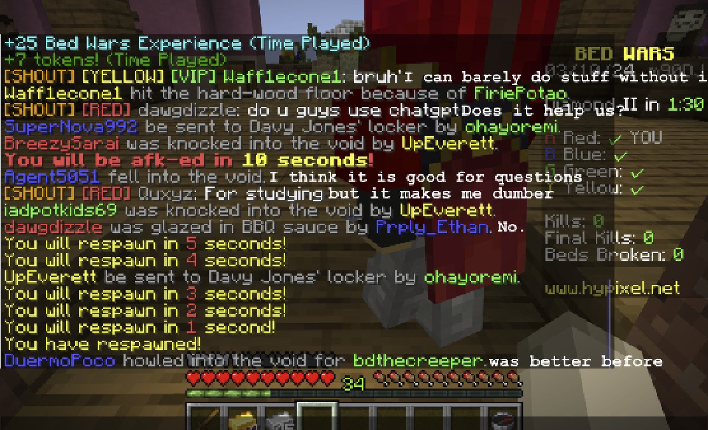

In my intervention, I wanted to ask people about their useage of AI and ChatGPT. The goal was to see whether people truly enjoyed this advancement in technology or felt it was a hinderance. I went to a popular game known as Minecraft, predominantly populated by the younger generation, to ask what people thought. The result was mized reviews. Overall, the users on this platform seemed skeptical of the use of the service and thought it was not benefitting them. Some conceded that it would be useful for asking questions or doing homework. However, it seemed that people thought it would damage thier personal motives to learn. People also appeared to depend on it highly and confessed to not being as independent as life before it. Overall, I think it was interesting to ask this question to a group of younger people already found online. Personally, I think that AI is overall beneficial and it is up to the people to decide how they want to use their AI and how much to depend on it.
